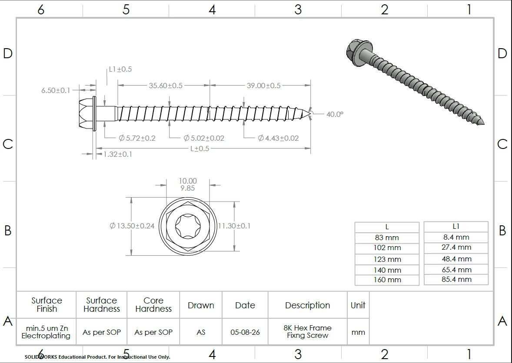

Tembo Global Industries Ltd.
Fastener CAD Library and QC Documentation
An in-house CAD library for a fastener manufacturer, modeled from internal dimension data and checked on a profile projector.

- Role
- Mechanical Engineering Intern
- Dates
- July–August 2026
- Scope
- CAD library for 50 fastener SKUs
CAD standardization
No in-house models to share with clients
Problem. In client meetings, and when handling clients’ custom requests, the team had no in-house drawings or CAD models of its own fasteners to show or share. Until then it had relied on generic DIN standard drawings found online, which did not represent its own parts.
What I built. A SolidWorks library of 50 fastener SKUs, modeled from scratch using the company’s internal dimension data and tolerances. I verified measurements on a profile projector, and set the library up as a directory for the team to maintain as its reference.
Drawings. I drafted technical drawings for product documentation and client presentations (Fig. 2).
Also during the internship
- Documented quality-control processes, including drill testing, profile projection, and tensile and compression testing.
- Worked with CNC wire cutting, lathes, and bandsaws.
